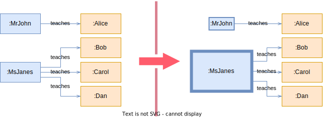

Heuristic visualization
Names
Heuristic visualization.
Motivation
The local context of a concept (i.e. its attributes values and its relations) can be used to guide the user in the exploration of a model. Heuristics can be extracted from concepts, that then can be visualized using visual features.
Applicability
Heuristic visualization can be applied to any model.
Context
The context is a single target metaclass, Target with a heuristic function, h.
classDiagram
direction LR
class Target {
h() : float
}Participants
Target. The targeted metaclass.- \(h\), the heuristic. It is a numeric function defined in
Targetand, as such, is enclosed within the local context ofTarget, namely \(LC\). Therefore, \(h\colon LC \to \mathbb R\) is its signature. Its value is significative to the desired visualization. - An ancillary function \(\textit{visualMap} : \mathbb R \to VF\), where \(VF\) is the visual feature space of a concept.
The composition of both functions yields \(f = \textit{visualMap} \circ h\), a \(LC \to VF\) function. That is, a function that maps local contexts of Target instances to visual features.
Consequences
—
Interaction
A heuristic function \(h\) is defined at a Target metaclass depending on the desired visualization. Then, the visual features of the Target instances are decided on the evaluation of \(f\).
Example
A university metamodel defines three metaclasses: University, Professor and Student. A university hasStudents and hires professors. A professor teaches some students. A student knows other students.
classDiagram
direction LR
University --> "*" Professor : hires
Professor --> "*" Student : teaches
University --> "*" Student : hasStudent
Student --> "*" Student : knows
class Professor {
h() : float
}In this case, we are interested in visualizing which professors teach the most. To apply the pattern, Professor::\(h\) is defined as the number of students that a professor teaches.
context Professor::h() : float =
self.teaches.size()
Then \(\textit{visualMap}\) is defined to map the received value \(n\) to a visual features object whose value for the size and the border are both \(n\). That is, these visual features scale linearly \(n\). Other visual features can be left unaltered, such as the background color or the font size.
At the end, the result of the pattern is the application of \(f = \textit{visualMap} \circ h\), which becomes:

Similar patterns
TODO
Variations
TODO
References
TODO